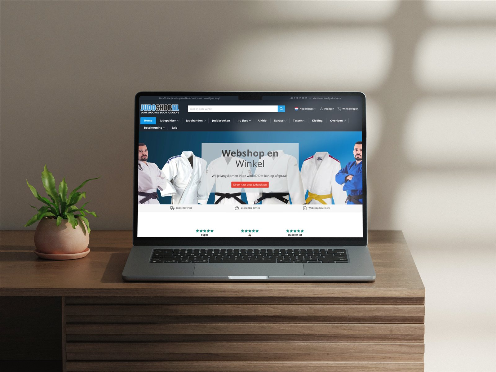
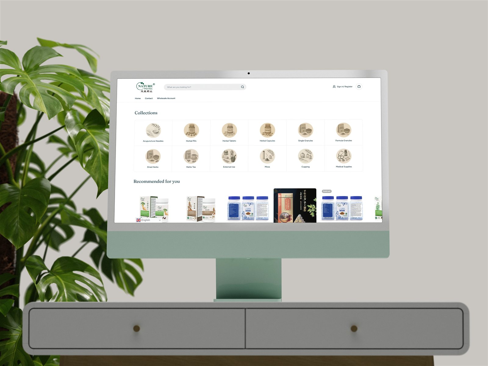

Case 01 — Judoshop
Van 2% naar 5% conversie met een complete rebuild
Uitdaging
Judoshop draaide op een verouderde webshop die bezoekers trok, maar niet overtuigde. De conversie bleef steken rond de 2% en de gemiddelde orderwaarde groeide al jaren niet mee.
Strategie
Een complete Shopify-rebuild, opgezet vanuit een CRO-strategie in plaats van een design-wens. Elke template-keuze werd onderbouwd met data: snellere productpagina's, een vereenvoudigde checkout en een upsell- en bundelstrategie die de orderwaarde structureel verhoogt.
Resultaat
De conversie steeg van 2% naar 5%, de gemiddelde orderwaarde met 34%, en de omzet per sessie groeide van €32 naar ruim €55. Geen eenmalige piek, maar een structureel hoger niveau.

Case 02 — TCM Trader
Internationale B2B-webshop, volledig op maat
TCM Trader is een Nederlandse groothandel in Traditional Chinese Medicine: Chinese kruiden, kruidentabletten en acupunctuurbenodigdheden. De klantenkring is internationaal en tweeledig: particuliere klanten die per zak van 250 gram bestellen, en zakelijke afnemers zoals praktijken en therapeuten die per doos inkopen.
Uitdaging
Een complexe productcatalogus online brengen waarbij elk product viertalige naamgeving heeft (Pinyin, Chinees, Latijn, Engels), met gewichts- en doseringsspecificaties. Daarnaast moest er een volwaardige B2B-omgeving komen met aparte prijzen en voorwaarden voor zakelijke klanten. Het probleem: Shopify biedt native B2B-functionaliteit alleen op Shopify Plus, een abonnement van duizenden euro's per maand dat voor deze klant niet in verhouding stond.
Oplossing
Ik heb de complete webshop van de grond af opgezet: thema, productdata-structuur, betaalintegraties en de tweetalige presentatie voor de internationale doelgroep. De B2B-omgeving heb ik zelf gebouwd zonder Shopify Plus, met maatwerk op basis van klantaccounts, customer tags en custom Liquid: zakelijke klanten loggen in en zien hun eigen prijzen en bestelopties, terwijl particuliere bezoekers de reguliere shop zien.
Resultaat
Een internationale webshop die B2C en B2B in één omgeving bedient, zonder de maandlasten van een enterprise-abonnement. De klant bespaart hiermee structureel duizenden euro's per jaar aan platformkosten, met behoud van alle functionaliteit die nodig is voor groothandelsverkoop.

Projectmanagement & teams
Tien projecten tegelijk, zonder dat er één stil valt
Als eigenaar van een e-commerce bureau was projectmanagement geen taak, maar de kern van het werk: klanten, freelancers en partners tegelijk in beweging houden.
10+ projecten parallel
Doorlopend tien of meer klantprojecten naast elkaar: van rebuild tot migratie tot doorontwikkeling, elk met eigen deadlines en stakeholders.
Freelancers & partners
Aansturing van developers, designers en externe specialisten — briefen, reviewen en kwaliteit bewaken over disciplines heen.
Planning & budget
Strakke planningen en budgetbewaking per project, zodat scope, kosten en verwachtingen nooit uit elkaar gaan lopen.
Bedrijfssystemen bij EBN
Complete bedrijfssystemen opgezet: Microsoft 365-workflows en NFC asset management, van ontwerp tot adoptie op de werkvloer.
Data & performance
Elke beslissing begint bij de cijfers
CRO zonder data is gokken. Ik bouw de meetinfrastructuur eerst, zodat elke optimalisatie aantoonbaar bijdraagt.
GA4 & dashboards
Meetplannen, GA4-implementaties en dashboards die per kanaal laten zien wat omzet oplevert — en wat niet.
SEO-audits
Technische en inhoudelijke SEO-audits als vast onderdeel van elk traject, van migratie tot doorlopende groei.
Google Ads & Meta Ads
Performance-campagnes die sturen op marge en terugverdientijd in plaats van op clicks.
Offline conversion tracking
Offline conversies teruggekoppeld aan campagnes via Zapier en Monday.com, zodat ook telefonische en B2B-omzet meetelt in de optimalisatie.
Shopify maatwerk
Als de standaard niet genoeg is, bouw ik het zelf
Takumi Fishing
Maatwerk add-on-functionaliteit bovenop Shopify, naadloos geïntegreerd in het bestelproces van de shop.
Decoline
Een op maat gebouwde productconfigurator waarmee klanten complexe producten zelf samenstellen — direct gekoppeld aan voorraad en checkout.
B2B-functionaliteit
Zakelijke bestelomgevingen binnen Shopify: klantspecifieke prijzen, staffels en bestelflows voor B2B-klanten.
Over mij
Ondernemer eerst, specialist daarna
Ik ben self-made: sinds 2022 bouw ik eigen ondernemingen op in IT, media en e-commerce — de afgelopen vier jaar fulltime in de praktijk, van strategie en CRO tot development en teamaansturing. Die ondernemerservaring neem ik mee naar elke rol: ik denk in omzet en marge, niet in taken.
- Ervaring
- 4+ jaar fulltime e-commerce praktijk
- Achtergrond
- Eigenaar e-commerce bureau
- Specialisatie
- Shopify, CRO, projectmanagement
- Talen
- Nederlands & Engels, vloeiend
Ondernemersreis — sinds 2022
IT-hulp aan huis voor ouderen
Gestart met Fixmijnit: IT-hulp aan de keukentafel. Hier leerde ik complexe techniek begrijpelijk maken voor iedere doelgroep — een vaardigheid die in elk project daarna terugkwam.
Videoproducties voor scholen en cultuur
Videoproducties voor scholen en culturele instellingen, van briefing tot eindproduct. Werken met opdrachtgevers, planningen en creatieve teams werd dagelijkse praktijk.
Shopify webshops & groeistrategieën
Doorgegroeid naar een e-commerce bureau: Shopify webshops en groeistrategieën voor MKB-klanten door heel Nederland — strategie, CRO en development onder één dak.
De rode draad: techniek toegankelijk maken en bedrijven laten groeien, met communicatie en samenwerking voorop.
Naast de cijfers
Wat klanten merken
Helder communiceren
Van ouderen aan de keukentafel tot directies aan de vergadertafel: ik vertaal techniek naar taal die de ander begrijpt — en beslissingen mogelijk maakt.
Stakeholder management
Scholen, culturele instellingen, MKB en B2B-klanten als opdrachtgevers: uiteenlopende belangen op één lijn houden is mijn dagelijkse praktijk sinds 2022.
Van briefing naar resultaat
Gewend om wensen te vertalen naar concrete, meetbare oplossingen — of het eindproduct nu een video, een bedrijfssysteem of een webshop met 5% conversie is.